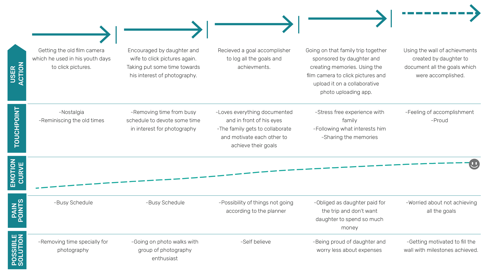

Persona
Primary recipient
An anonymized family recipient with a demanding schedule, strong family values, and a preference for visible planning.
Personal gifting experience | End-to-end product design
I designed a multi-touchpoint gifting experience for a family recipient: a refurbished camera, a restorative family getaway, and a collaborative planner that turns ambitions into visible, printable milestones.
Design challenge
The project began as a personal gift for my dad, but I treated it like a product design problem: understand the recipient, identify emotional and practical needs, design across touchpoints, and prototype the part of the experience that could keep the gift alive over time.
I kept the solution personal. Instead of reshaping it into a commercial gift-card idea, I focused on the principles that matter in gifting products: relevance, personalization, emotional timing, family participation, and continued use.
Recipient research
Research came from lived observation, family context, and mapping the people who shape his day-to-day decisions. The goal was to design for his actual behavior, not for a generic idea of what a father might want.
Persona
An anonymized family recipient with a demanding schedule, strong family values, and a preference for visible planning.
Motivations
Constraints
Stakeholder map
Immediate family shaped the emotional context and logistics. Friends, coworkers, commute connections, and acquaintances shaped the recipient's social world, but the highest-opportunity design space was the family system.
Design strategy
The class framework helped me make the gift more intentional: understand the recipient emotionally, use my relationship as design credibility, then structure the solution around past, present, and future needs.
The final direction needed to feel emotionally right for the recipient, credible from me as the giver-designer, and logically structured enough to support a long-term behavior change.
A family-centered recipient who does not focus on himself much.
As his daughter, I knew his routines, stressors, preferences, and emotional cues.
A combined solution could support nostalgia, rest, planning, and accomplishment.
Concept model
Past | Nostalgia
Bringing back the camera he used in his youth encouraged him to reconnect with photography and old memories.
Present | Self-care
A shared break from work stress created time for rest, family connection, and low-pressure memory making.
Future | Accomplishment
A collaborative planner helped the family make goals visible, document progress, and celebrate milestones together.
Journey map
I used the journey map to track actions, emotional touchpoints, pain points, and possible interventions across the full gift experience.
Nostalgia and old memories create the first emotional hook.
Family encouragement makes the hobby feel worth prioritizing again.
The planner gives ambitions a visible place and a shared rhythm.
The family trip turns planning into a concrete shared experience.
The achievement wall creates pride and motivation to keep going.

System design
Research, planning, app design, and remote coordination
Local collaborator who helped coordinate the gift at home
Shared digital and printable planning hub
Made family plans visible on a bigger shared surface
Created memories that could be documented and revisited
Turned completed goals into tangible pride
Prototype
I expanded the planner into a more complete product concept: a shared family planning space with templates, checklists, milestone tracking, collaboration, and a printable view for the recipient's need for tangible documentation.
Core problem
Purely digital planning would miss the recipient's love for documentation. Purely physical planning would make remote family collaboration harder.
Design response
The prototype combines daily planning, monthly memory tracking, yearly milestones, printable templates, and a projector-friendly dashboard.
Product principle
Goals are not only tasks. They become memories, proof of effort, and visible achievements that the family can celebrate together.
Today
Why this view matters
The daily view makes the goal small enough to act on, while the family note turns an individual plan into a shared emotional touchpoint.
Printable card
Storyboard

I was away from home, so I collaborated with a family member to make the gift feel coordinated and personal.

My dad feels assured when plans are visible, organized, and in front of his eyes.

The planner and wall of achievements turned goals into something the family could see, print, revisit, and celebrate.
Outcome and reflection
This project helped me understand gifting as a product experience: the most meaningful solution was not one object, but a connected system of emotional, social, physical, and digital touchpoints.
The solution came from the recipient's actual routines, stressors, and motivations.
The gift connected objects, family activities, a web app, printouts, and a visible achievement wall.
The work shows how gifting experiences can support choice, emotion, participation, and long-term meaning.
I would test the planner with multiple family members, refine onboarding, add reminders, improve accessibility, and validate which printed formats are easiest to maintain over time.
Build a working planner MVP, create editable goal templates, add shared photo uploads, and design a lightweight achievement-wall export that can be printed or projected.